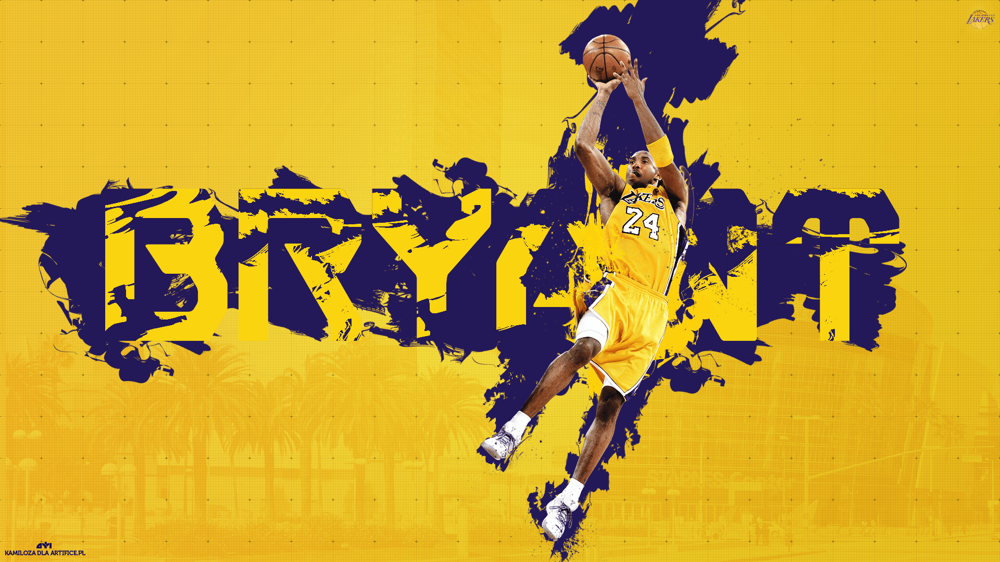

One of the Greatest Basket Ball Players of All Time
Highlights
August 23, 1978: Kobe Bean Bryant is born in Philadelphia, the son of former 76ers forward Joe ‘Jellybean’ Bryant.
July 1996: Picked 13th in the NBA Draft by Charlotte Hornets, straight out of Lower Merion High School. The 17-year-old is then traded to LA Lakers for Vlade Divac.
June 2000: Wins first NBA title as the Lakers beat Indiana in the Finals with Phil Jackson as coach and Shaquille
O’Neal at centre.
December 2000: Scores 51 points against Golden State, Bryant’s first 50-plus game. Averages 28.5 points a game for the
season, second on the team to O’Neal (28.7). Lakers repeat as NBA champions, beating 76ers in five games.
January 2006: Scores 81 points against Toronto, second-highest in NBA history behind Wilt Chamberlain’s 100-point game.
Leads league in scoring (35.4) as Jackson returns to coach the team. Lakers lose to Phoenix in first round of playoffs.
June 2009: Wins fourth NBA title and is named Finals MVP as Lakers beat Orlando in five games.
June 2010: Collects fifth NBA championship ring as Lakers beat the Boston Celtics in seven games. Named Finals MVP.
April 2013: Tears left Achilles tendon in game against Golden State. Successful surgery leaves him unable to play for
six to nine months.